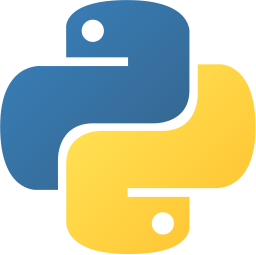
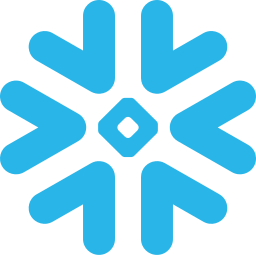
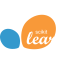
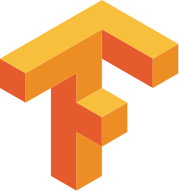
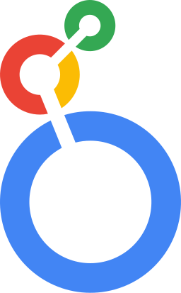

Hi there!
I'm David Gallo
Data Science @
MSc AI and Business Analytics
- City
- Ottawa, Ontario
- Languages
- English, French, Italian, Arabic
- david.gallo747@gmail.com
- Phone
- +1 613-265-3551
- linkedin.com/in/davidgallo747
Hi there!
Data Science @
MSc AI and Business Analytics
I lead data science for Coinbase Canada and Coinbase Brazil. I decide what we test, what we ship, and how we measure it.
I'm a data geek with a background in business. I use causal inference, statistical modelling, and machine learning to find what actually moves the business, and I build the AI tools and agents that are changing how that work gets done.
n = 1. Point estimates with 95% intervals.
2025 - Present
I lead data science for Coinbase Canada and Coinbase Brazil. I own the experimentation, machine learning, and analytics work for both markets. I build ML models, run and analyze A/B/n tests, maintain data pipelines, and go digging for insights.
I also build AI-native tools and workflows for my stakeholders, like custom harnesses, skills, connectors, and automations. The rest of the job is working with senior country leaders so they can make good decisions, ship quickly, and know whether it worked.
2022 - 2024

Based in Berlin, I led customer logistics analytics for the largest food delivery company by global sales. I worked with product managers and engineering squads to put data into how features got planned and shipped.
I ran complex A/B/n experiments with supervised and unsupervised machine learning. One density-based clustering model found delivery zones with problem overlaps and improved delivery-time estimates by 15% globally. I also built data science product features and pipelines with SQL, BigQuery, Airflow, and Python, and tracked KPIs in Tableau, Looker, and Streamlit.
2020

I was the lead data scientist for a new DNS firewall product, working with an agile team. I built a machine learning workflow with Logstash, Elasticsearch, MySQL, Python, and Kibana to process DNS data in real time, and used hierarchical density-based clustering to analyze millions of DNS requests a day in AWS.
2019

At DFO, I was the face of the legal team for internal departments, managing time-critical requests for legal input. I also overhauled an important JetSQL database.
2017 - 2018

My career started here, managing the accessibility and security of a lot of data in OpenText CS, where I also scripted my first automation tools.
2024 - 2025

Based in Montreal, I was brought on to help build out Zinnia's Canadian presence. After the Policygenius acquisition I led data analytics for Property and Casualty insurance, working on the profitability of the home and auto vertical through data exploration, experiments, and longer-term projects in BigQuery, Python, and Tableau.
2021 - 2022

On the Content Services team at Deloitte Digital, I worked on tech transformation projects from strategy through implementation. I led small project teams and was a stream lead on large engagements.
I led QA and the data analytics stream for a federal cloud platform used by over 400,000 new Canadian migrants a year, and led analytics for an NLP-driven market research product at a fintech. I picked up a Green Dot and a Silver Dot award along the way.
2020
Back again at DND, I built a SQL database and GUI to track accommodations, along with a project plan to migrate business assets to SharePoint.
2019

This was my first foray into AI and analytics. I implemented cloud-based ML solutions for a large oil and gas company, and wrote a lot of the content for several cloud transformation proposals. I also built a target operating model for a public sector records management program.
This is a fake A/B test that runs right in your browser. Visitors land on one of two versions of a page, and you can watch the Bayesian posteriors narrow as the data rolls in. Once it hits the planned sample size, it makes the call. Hit rerun for a brand new world. The variant doesn't always win (in real life, it usually doesn't).
waiting
Scroll here to start the test.
This one's a fixed-horizon test. Checking it early and stopping when it looks good inflates the false positive rate. If you want to peek, set it up as a sequential test instead (an mSPRT with always-valid confidence intervals, for example), which lets you check the results as often as you like.

Python
Snowflake
scikit-learn
TensorFlow Tableau
Tableau
Looker2021 - 2022
Toulouse Business School

Toulouse, France
A triple-accredited program on applying AI and analytics in business, with a deep applied grounding in statistics, machine learning (deep learning included), data mining, and stochastic processes.
Thesis: "Algorithmic Cryptocurrency Trading using Sentiment Analysis and Dueling Double Deep Q-Networks"
2016 - 2021
University of Ottawa

Summa Cum Laude
Ottawa, Canada
Technology and data analytics on top of the business fundamentals, including accounting, finance, marketing, and management.


As project manager, I led over 80 engineering students and managed more than $450,000 in grant funding to build a satellite with the Canadian Space Agency.

As a musician and musical director for the annual CASCO Gala, I helped raise over $250,000 for the Children's Hospital of Eastern Ontario over 4 years.

I competed twice in JDC, the largest business competition in Eastern Canada. I earned Academic VIP twice and 2nd place overall.

After graduating, I kept coaching new JDC teams every year, and won the Coach of the Year trophy in 2022 with a 1st-place team.

I represented my city at LAZICC in Waterloo, where my team took 1st place in the five-hour case crack and 3rd place overall.

I was elected to the Senate for 3 annual terms. It's the university's highest governance body, made up of faculty reps, Deans, Directors, VPs, and the Chancellor.

As VP Internal, I looked after relations with the university, students, and alumni. As Director of Sponsorship, I built relationships with local firms.

Alongside drumming, I completed Grade 8 Piano and Advanced Rudiments with the RCM, after 16 years of practice and performance.